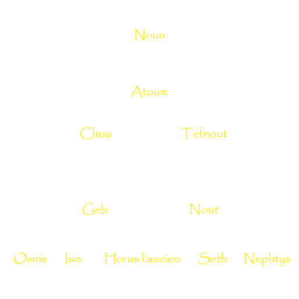

Au tout début il y'avait un ocean primordial appelé le Noun, l’obscurité dominait, et rien n’existait.
De cet ocean primordial emergea Atoum (« Celui qui est complet », « Celui qui est la totalité »,
« Celui qui est et qui n’est pas ») le premier des dieux qui se donna lui
même naissance en prenant conscience de son existence. Le dieu imagine alors une butte de terre appelé
le Benben au milieu de l’eau et elle apparaît pour qu’il s’y pose. Atoum n’a pas de compagne, donc il
s'unit à lui-même par onanisme, et 2 enfants sont le fruit de cet acte : un fils Chou(« souffle vital » et dieu de l'air sec )
et une fille Tefnout(La déesse de l'air humide).
Cette naissance engendre des conséquences considérables
car Chou est la Vie c’est à dire qu’il est la vie en elle-même et il est aussi la lumière. Tefnout est la
première déesse, le premier être féminin de la Création. Elle est l’épouse de son frère Chou. Elle représente
la chaleur du soleil et est une personnification de la Maât. La Maât apparaît très tôt quand le Créateur prend
conscience et commence la mécanique céleste. Maât est une entité métaphysique qui régit l’ordre. Maât est
l’Ordre maintenant en équilibre le Bien et la Mal, tient à l’écart le Chaos. Car pour les Egyptiens, le Bien
et le Mal sont indissociables, l’un ne pouvant exister et prospérer sans l’autre.

De l'union de Chou et Tefnout naquirent deux enfants : Geb, la terre et Nout, le ciel. D’Atoum va sortir le
soleil qui deviendra plus tard Rê, le dieu solaire mais ce dernier ne peut pas bouger normalement. Alors,
pour garantir l’équilibre et l’Ordre cosmique, Atoum ordonne à Chou de maintenir séparer la Terre (Geb) et le Ciel (Nout):
l’Univers était alors créé et peu à peu, le Noun se fait reléguer en dehors du nouveau monde naissant.

Le démiurge Atoum est celui qui donne vie aux êtres humains, comme il l’a donné aux premiers dieux.L’Homme n’apparaît pas sur terre tout seul. Les Textes des Sarcophages (textes funéraires du Moyen Empire, 2000-1780 av. JC) parlent à plusieurs reprise de cette création, et particulièrement ce court passage : « les hommes sont les larmes de mon œil ». Un des récits les plus fréquents de la création de l’Homme est que les hommes sont nés des larmes de l’œil du démiurge et Chou leur insuffla la vie.
Une des conséquences de l’apparition du soleil, du ciel est la course solaire de Rê de 360 jours et la création du jour
et de la nuit. Mais comme vous le savez, une année est égale à 365 jours. Il manque donc 5 jours. Ces dernières journées
font parties de la Création. En fait, Nout enceinte ne pouvait pas donner naissance durant la course normale du soleil,
il fallait trouver un subterfuge. C’est alors que selon une légende, Thot joua avec la Lune et gagna, donnant naissance
aux cinq jours supplémentaires, permettant à Nout d’accoucher sans être inquiétée. 
En réalité, ces cinq derniers jours sont appelés « épagomènes ». Ce terme vient du grec epagomena hemera signifiant jour
supplémentaire. Dans la cosmogonie égyptienne, ces jours s’identifient aux « enfants de Nout », au nombre de cinq :
Isis, Orisis, Seth, Nephtys et Horus l’Ancien (à ne pas confondre avec Horus fils d’Isis et d’Osiris). Ces cinq divinités
révéleront les mauvaises actions aux hommes. Ainsi, le premier jour, naquit Osiris, le second, Horus l’Ancien, puis Seth,
durant le 4e, Isis puis enfin la dernière journée, Nephtys. Ces jours sont mal vus par les Egyptiens et particulièrement
le 3e, celui de Seth.
C'est un groupe de neuf entités divines imaginée par les théologiens d'Héliopolis, symbolisant les forces nécessaires à la création du monde organisé: le démiurge Atoum, ses enfants Chou et Tefnout, ses petits enfants Geb et Nout et leurs descendants excepté Horus l'ancien: les deux couples Isis et Osiris, Nephtys et Seth.
Lorsque le créateur prend conscience de lui-même, rappelons, que le Noun possédait les ingrédients nécessaires à la création.
Mais pour accomplir sa tâche, Atoum n’est pas seul, des serpents vont l’aider mais ces bêtes se révèlent dangereuses lorsque le monde existe
car elles appartiennent au Noun, le Chaos menaçant l’ordre cosmique. Et lorsque Rê, le soleil, quitte le ciel du jour pour rentrer dans les
heures de la nuit, il doit, sur sa barque solaire, faire un périple de 12 heures avant de renaitre à l’aube. Un des ennemis du soleil est le
serpent géant Apophis, né au cœur du Noun. Incréé comme Atoum, Apophis ne peut être détruit. On peut seulement le neutraliser.